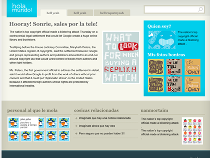

ahora todo junto
Con todo lo que hemos visto en este cursito no debería de ser nada difícil poder hacer un layout como el que vemos en la imagen :) Es sólo cuestión de práctica y de equivocarnos miles de veces.
Pero claro, aquí somos todos de ver para creer, así que lo mejor va a ser que lo deje hecho en un ejemplito para que lo podáis inspeccionar alegremente y que os sirva para despejar dudas (eso espero!!!).
Al ejemplo se va por aquí.